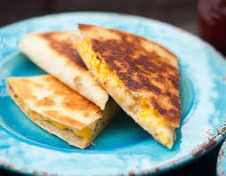

Scrambled Egg Quesadilla with Herbs

Description
Fluffy, tender eggs packed with the fresh, herbacious taste of cilantro and scallions nestled inside
crispy torillas and suffused with melted cheese. These are next-level delicious, and barely
more work than the classic cheese quesadilla.
Ingredients
- 3 eggs
- 2 tbsp cilantro, minced
- 3 scallion whites, minced
- 1 tbsp unsalted butter
- 4 oz melting cheese, such as cheddar or jack, chopped or grated
- 2 flour tortillas
- 2 tbsp olive oil
- kosher salt and fresh-ground pepper
Directions
- Drizzle olive oil and heat in a cast-iron skillet over medium-low heat.
- Whisk eggs with a large pinch of kosher salt and a few grinds of black pepper.
Pour into a cold non-stick skillet with the butter.
- Heat pan over medium while stirring frequently with a spatula appropriate for non-stick.
- Keep stirring as curds form until eggs are scrambled but still wet. They will keep cooking after
you remove them from the heat, so take them off before they reach the desired texture.
- Stir in the cilantro and scallions off the heat.
- Place a tortilla into the hot oil and sprinkle with half of the cheese. Use your spoon or spatula
to smear the eggs over the cheese, then sprinkle the remaining cheese over the eggs. Top with second tortilla.
- Cook on first side for 3-5 minutes, swirling occasionally to ensure even browning. Flip and cook until second
side is cooked, another 3-5 minutes. Note that stoves vary, and you may need to adjust the heat to brown within
that window.
- Remove from the pan onto a folded paper towel. This prevents steam from making the bottom soggy. SLice into triangles and enjoy!